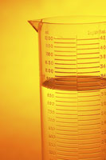

Unit 3: Quantities in Chemical Reactions
Activity 1: Chemistry in Science, Technology, Society and the Environment
Content
Measurements, Reactions and Calculations
| Remember that delicious cake for dessert or was it a piece of pie you tried? Were there seconds? Think about the effort that was put into making that dessert. A recipe shows the exact ingredients and their measurements, as well as the specific steps to follow to ensure a delicious dessert. |
People who make cakes follow an experimental procedure. The recipe lists the chemicals and their respective amounts, the equipment, and the steps involved in producing a successful product; in this case, a dessert. Chemists approach chemical reactions in the same way. The reactants and lab apparatus are known. The steps are followed in order to produce the conditions necessary for the reaction(s). Any significant missteps in following the procedure can lead to disastrous results.
| Quantitative procedures or applications are critical components in ensuring success in analysis and/or production. A case in point: One common ingredient in the production of peanut butter is salt. A peanut butter factory produces an enormous amount of peanut butter during a shift. The rate of the amount of salt added to the peanut butter is dependent on how fast and how much peanut meal is processed per hour. Peanut butter that is too salty, or not salty enough, will not meet the company’s standards required to ensure a saleable product. |
One way to make sure that the levels of salt meet the company standard is to perform a chemical analysis of the peanut butter. The amount of salt can be measured by a simple reaction:
NaCl(aq) + AgNO3(aq)  AgCl(s) + NaNO3(aq)
AgCl(s) + NaNO3(aq)
The reactants’ respective amounts in this reaction are critical to ensuring that the results are a true indication of the amount of salt in the peanut butter. Any mistake in measuring the amount of tested peanut butter, and/or the solution of silver nitrate, will produce a false reading. If mistakes are made in the lab, then the error-filled chemical analysis will not properly identify the amount of salt in the peanut butter sample.
Sometimes, too much of one reactant can be a good thing in a chemical reaction. A case in point: In creating a cast, the temperature of the reaction will exceed 100°C when mixing precise amounts of plaster and water. This reaction produces a lot of heat. The technician who helps to mix the water and plaster, follows a procedure and knows that there must be an excess amount of water in the preparation of the cast. The reaction is as follows: 2CaSO4•½H2O(s) + 3H2O(l) |
 Question
Question
- What purpose would an excess amount of water serve in this reaction during the preparation of a cast?
 Answer
AnswerSignificant Figures and Calculations:
|  | The precision of a measurement is expressed by its significant figures. Comparing the volumes of two samples, Sample A (17.4 mL) and Sample B (17 mL), it is evident that Sample A is measured and rounded off to the nearest tenth of a millilitre and Sample B is measured and rounded off to its nearest unit value. Sample A’s measurement has three significant figures and Sample B has two significant figures. Sample A has a more precise measurement compared to the measurement for Sample B. |
 Example
Example
In determining the number of significant figures, examine the following examples to act as a reference:
Take note of the following guidelines that were used in the example above:
- Numbers 1 to 9, inclusive, are significant, i.e., 2785.3 has five significant figures;
- Any zero between digits is significant, i.e., 1003. 02 has 6 significant figures;
- Any zero to the left of a non-zero digit doesn’t count as a significant figure, i.e., 0.002 85 has 3 significant figures;
- Any zero and only zeros to the right of a decimal are significant, i.e., 25.00 has 4 significant figures;
- Any zero to the right of a digit in a decimal position is significant, i.e., 93.210 0 has 6 significant figures;
- Any zero between the rightmost digit and the “invisible” decimal may or may not be significant depending on knowing the context of the number, i.e., 50 could have 2 significant digits if we know that maybe someone performed exactly 50 sit-ups or 50 could have 1 significant figure if someone estimated that there were about 50 candies in the bag.
This is a disclaimer. External Resources will open in a new window. Not responsible for external content.
Unless otherwise indicated, all images in this Activity are from the public domain or are © clipart.com or Microsoft clipart and are used with permission.